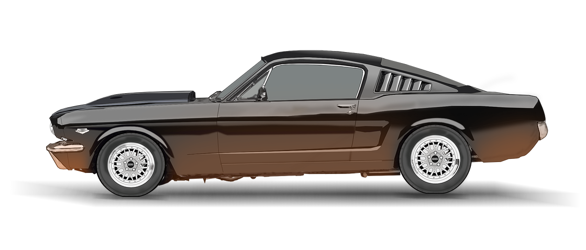
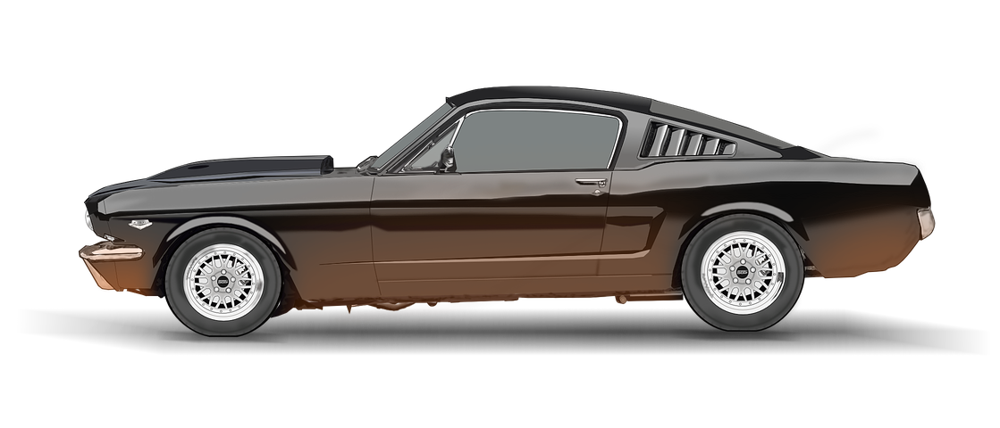

1969 Mustang Body on a 2014 GT500 Chassis?


New 1969-70 Ford Mustang Mach 1, Boss 302 and Boss 429 now on sale
Ford has a new Mach 1 in the works.
It’s not a Mustang, but an all-electric performance utility vehicle
that it plans to unveil in a couple of years.
If that’s not your thing, don’t worry, because now you can buy a
brand new version of the original Mustang Mach 1.
At least the closest thing to it.
Classic Recreations of Yukon, Oklahoma has been building a variety
of officially-licensed continuation Mustang Shelby models for the
past decade, and has now secured the rights to do the same for the
1969-1970 Mach 1, Boss 302 and Boss 429.
They start with either a new body built by R3 or a standard Mustang
donor car that they strip down, get in perfect shape and add all of
the bits needed to recreate the original look of the high
performance models.
Everything underneath gets a refresh, too, including a coilover
suspension setup, modern brakes and a new Ford Performance engine.
Boss 429 (Classic Recreations)
They’ll drop in pretty much anything the customer wants, but owner Jason Engel says the first 429 will have a 460 cubic-inch V8 with “Boss 9” hemispherical heads and electronic fuel injection that’s already putting out 700 hp, and they’re not done tuning it yet.


A Boss 302 and Mach 1 Are Also Available If you walk into a Ford dealer today, you can pick up a 2018 Mustang GT that makes 460 hp, hits 60 mph in 4.4 seconds, and includes an optional magnetic suspension for less than $45,000. It will be comfortable and refined enough to take on a road trip, while still keeping up with the pricier BMW M4 on the track.
A Boss 302 and Mach 1 Are Also Available
If you walk into a Ford dealer today, you can pick up a 2018 Mustang GT that makes 460 hp, hits 60 mph in 4.4 seconds, and includes an optional magnetic suspension for less than $45,000.
It will be comfortable and refined enough to take on a road trip, while still keeping up with the pricier BMW M4 on the track.But no matter how good the current car is, there's always going to be a certain group of people who wish Ford would simply keep building vintage Mustangs. That's where continuation builders such as Classic Recreations come in.
Classic Recreations has been building officially licensed Shelby Mustangs for a while, and according to our friends at AUTOMOBILE, they're good. Really good. Recently, CR landed the license to build three more classic Mustangs: the 1969-1970 Boss 302, the 1969-1970 Boss 429, and the 1969-1970 Mach 1. These aren't resto-mods, either. Underneath the vintage sheetmetal, you essentially get a brand new car.